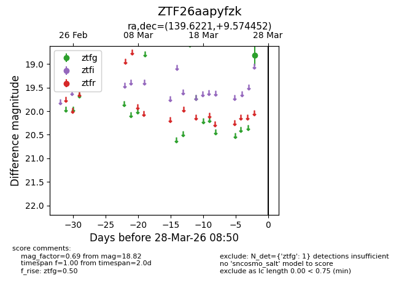
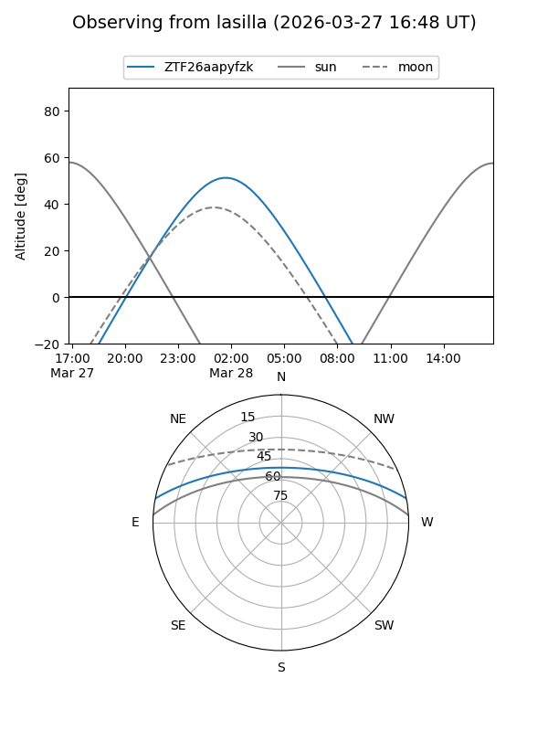
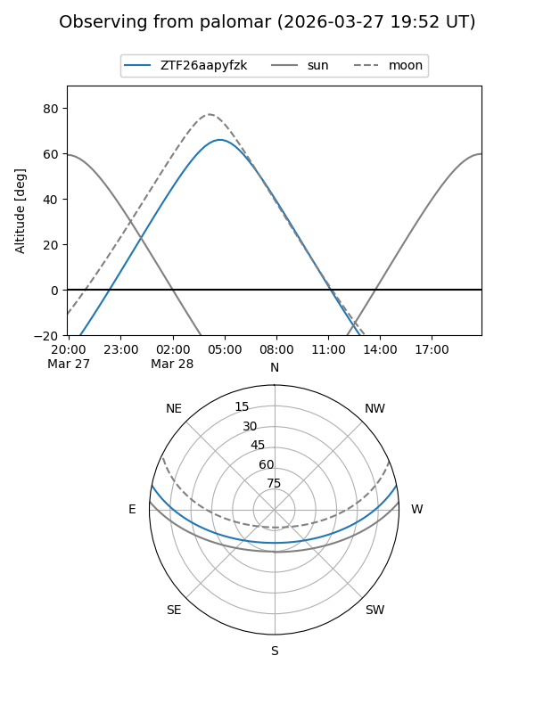

ZTF26aapyfzk
Target ZTF26aapyfzk at 2026-03-28 08:53
Aliases and brokers:
FINK: link
Lasair: link
ALeRCE: link
alt names
ZTF26aapyfzk (ztf,fink_ztf)
Coordinates:
equatorial (ra, dec) = 139.6221,+9.57445
equatorial (HMS+DMS) = 09:18:29.31,+09:34:28.03
galactic (l, b) = (221.6456,+36.94747)
Flags:
Photometry:
last ztfg=18.82
1 ztfg detections
Lightcurve

Visibility


Additional plots